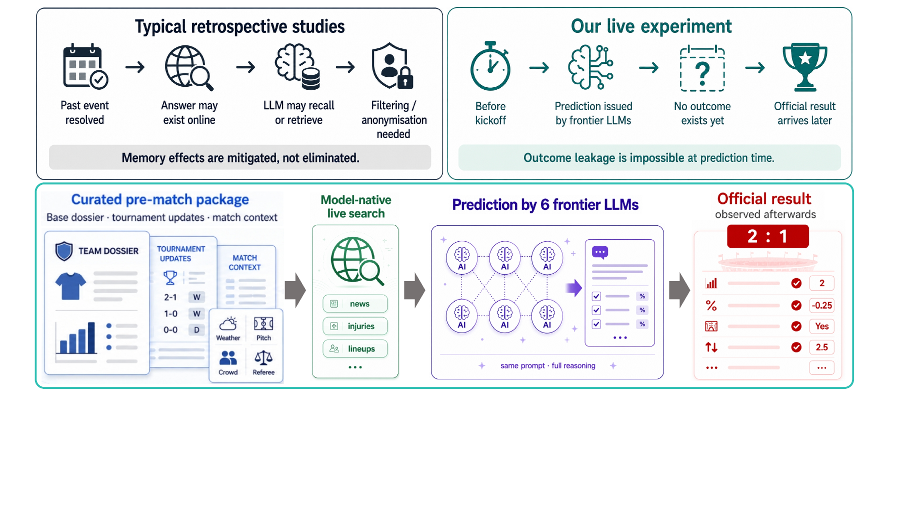
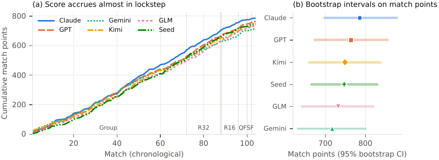
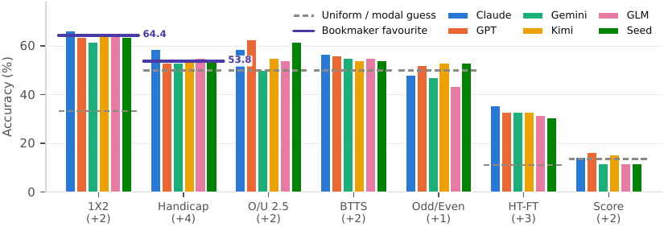
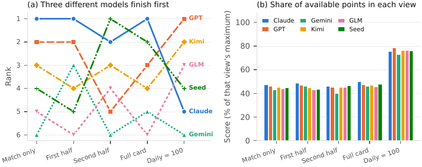

01 / THE HONEST FORECASTING TEST
让模型在结果存在之前作答
模型可以检索、总结和重新推导已经发生的事情，却不能回忆一个尚未发生的赛果。因此，真正的未来事件提供了一个极少见的评测条件：污染不是需要事后检测的风险，而是在提问时答案根本不存在。
WorldCup Arena 用一场密集、完整、可观察的赛事换取严格的时间真实性。每次预测都绑定一个冻结的球队档案、比赛元数据和统一盘口，输出在开球前提交，赛后才写入结果和后续档案。

PAPER 05 · ARXIV 2608.04008
大多数大模型预测评测发生在事件结束之后：答案已经在网上，模型可能只是回忆。WorldCup Arena 把问题放在真实比赛开球之前：在 2026 世界杯 39 天赛期内，让 6 个前沿模型逐场填写 7 个市场的预测卡，再用官方赛果结算；答案在提问时尚不存在，因此防泄露来自实验构造而不是事后筛查。
01 / THE HONEST FORECASTING TEST
模型可以检索、总结和重新推导已经发生的事情，却不能回忆一个尚未发生的赛果。因此，真正的未来事件提供了一个极少见的评测条件：污染不是需要事后检测的风险，而是在提问时答案根本不存在。
WorldCup Arena 用一场密集、完整、可观察的赛事换取严格的时间真实性。每次预测都绑定一个冻结的球队档案、比赛元数据和统一盘口，输出在开球前提交，赛后才写入结果和后续档案。

02 / TASK AND LEAKAGE LOCKS
每次调用只读取当时的球队档案快照，已结束比赛才可写回。
调用时间必须早于开球，防止搜索直接拿到赛果。
六个模型收到字节级一致的比赛信息、盘口和模板。
原始回答、搜索标记、提示词和结算记录全部留存。
| 预测卡字段 | 选项 / 权重 | 作用 |
|---|---|---|
| 盘口 | 主队赢盘 / 走盘 / 客队赢盘 · 4 分 | 把公开市场基线纳入同一张卡。 |
| 半场 / 全场 | 9 种组合 · 3 分 | 测试更细粒度的比赛进程判断。 |
| 赛果 1X2 | 主胜 / 平 / 客胜 · 2 分 | 最常见的离散结果预测。 |
| 大小球 / 双方进球 / 比分 / 奇偶 | 2 / 2 / 2 / 1 分 | 构成 7 个互相约束的市场输出。 |
03 / PAPER FIGURES AND FINDINGS


| 观察 | 论文报告 | 阅读方式 |
|---|---|---|
| 赛果准确率 | 六个模型平均 63.9%，接近机械选择盘口热门的 64.4% | 模型没有明显击败公开市场基线。 |
| 热门依赖 | 模型在 85.6%–90.4% 的比赛选择盘口热门 | 高准确率很大程度上来自保守选择。 |
| 平局与比分 | 预测平局 8–14 场，而实际有 27 场；28.0% 比分集中在 2–1 | 模型在分布尾部和不确定性上过度收缩。 |
| 意见趋同 | 76.0% 比赛的模型赛果选择一致 | 多数投票并没有增加多少信息。 |
| 比赛难度 | 32 强轮准确率 86.5%，半决赛仅 8.3% | 准确率随比赛是否一边倒，而不是材料多寡变化。 |

04 / DATA AND REPRODUCIBILITY
48 支球队各自拥有 Markdown 档案，包含 FIFA / Elo / 种子、阵容、历史、近年比赛、关键球员、伤停与最新消息。系统保留 46 个时间戳快照，每次预测记录自己使用的版本。
六个模型均使用各自供应商的原生服务端搜索和最高可用思考设置；848 条原始响应中有 757 条携带搜索实际执行标记。它测的是模型在真实信息流中使用工具的能力，而不是离线百科问答。
05 / CONTRIBUTION AND RELEASE